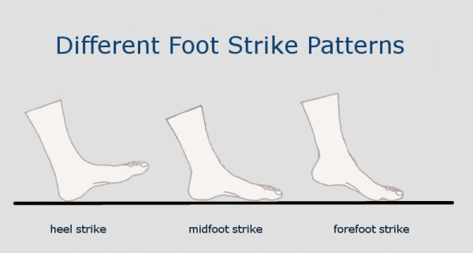

วิธีการลงเท้า ให้เหมาะกับประเภทการวิ่ง
10 ต.ค. 2562 · by sport.trueid.net · in Fitness & Strength,
Training Tips
การวิ่งจัดเป็นการออกกำลังกาย ที่ได้รับความนิยมเป็นอย่างมาก โดยเฉพาะช่วงหลังๆ มานี้ มีนักวิ่งหน้าใหม่ๆ
เลือกใช้กีฬานี้เป็นการออกกำลังกาย เพื่อสุขภาพ หรือ เพื่อการแข่งขัน ระยะการวิ่งที่มีคนให้ควาสนใจมากที่สุด
น่าจะเป็นที่ 10.5 กิโลเมตร มินิมาราธอน โดยการวิ่งก็มีเทคนิคต่างๆ มากมาย วันนี้ทางทีมงาน Sport Truelife
ขอแนะนำ วิธีการลงเท้าให้เหมาะสมกับการวิ่งอย่างถูกวิธี
เทคนิคการวิ่งที่นักวิ่งมือสมัครเล่นได้รับความรู้กันต่อๆ มา คือ “วิ่งช้าให้วิ่งลงส้น วิ่งเร็วให้ลงปลายเท้า”
ส่วนการวิ่งลงน้ำหนักกลางเท้านั้น นักวิ่งมืออาชีพจะจัดให้อยู่ในประเภทการวิ่งระยะไกล โดยการวิ่งทั้ง 3
ลักษณะนั้น จะมีความแตกต่างกัน ดังนี้

1.การวิ่งแบบลงส้นเท้า (Heel Strike)
การวิ่งแบบลงน้ำหนักที่ส้นเท้าหรือ Heel Strike คือ การวิ่งโดยใช้ส้นเท้าเป็นจุดถ่ายแรงสู่พื้น
จากนั้นฝ่าเท้าจึงลงสัมผัสกับพื้นทั้งหมด แล้วจึงใช้ปลายเท้าออกแรงส่งตัวเพื่อดันไปข้างหน้า
ท่านี้จะตรวจจับแรงกระแทกได้มาก 2 ช่วงคือ เมื่อส้นเท้ากระแทกพื้นและเมื่อฝ่าเท้าสัมผัสพื้นทั้งหมด
การวิ่งแบบลงส้นเท้า (Heel Strike) จึงเหมาะสมกับการวิ่งออกกำลังกายทั่วไป เน้นเพื่อสุขภาพ
2.การวิ่งแบบลงฝ่าเท้า (Midfoot Strike)
การวิ่งแบบลงฝ่าเท้า
เท้าจะสัมผัสพื้นพร้อมกันแล้วจึงใช้ปลายเท้าดันต่อไปข้างหน้าซึ่งท่านี้จะสามารถลดแรงกระแทกของเท้าขณะลงพื้น
ได้ดีแต่เป็นท่าที่เมื่อยมาก ถ้าวิ่งไปไกลๆ
3.การวิ่งแบบลงปลายเท้า (Forefeet Strike)
เป็นการลงเท้าที่นิยมในกลุ่มนักวิ่ง ที่ใช้ความเร็ว ปลายเท้าจะเป็นจุดถ่ายแรงสู่พื้น ตามมาด้วยส้นเท้า
ก่อนจะออกแรงส่งตัวไปข้างหน้าด้วยปลายเท้าอีกครั้ง แรงกระแทกจะเกิดขึ้นเพียงส่วนเดียว
เมื่อฝ่าเท้าสัมผัสกับพื้นทั้งหมด โดยการวิ่งด้วยปลายเท้า จะใช้แรงน้อยกว่าวิ่งแบบลงส้นเท้า
การวิ่งด้วยส้นเท้าจะช่วยให้วิ่งได้ระยะไกลมากกว่า
แต่ก็มาพร้อมกับความเสี่ยงที่จะได้รับการบาดเจ็บจากการวิ่ง
เนื่องจากการวิ่งแบบลงส้นเท้าจะเกิดแรงกระแทกกับพื้นมากกว่า โดย หัวเข่า และข้อเท้า เป็น 2
จุดแรกที่ได้รับการกระเทือน โดยตำแหน่งหัวเข่าจะเป็นส่วนที่บาดเจ็บง่ายสุด เพราะการวิ่งลงส้นเท้า
จะทำให้ขาก้าวยาวเกินไป ทำให้เกิดแรงกระแทกกลับมา
ขณะที่การวิ่งด้วยปลายเท้า โอกาสบาดเจ็บจะน้อยกว่า เนื่องจากแรงกระแทกจะเกิดขึ้นกับร่างกายน้อยกว่า
อวัยวะที่รับแรงกระแทก ได้แก่ น่องและเอ็นร้อยหวาย เพราะกล้ามเนื้อทั้ง 2 ส่วน
จะได้รับการเคลื่อนไหวในลักษณะกระโดดขึ้นลง ทำให้มีความเสี่ยงที่จะบาดเจ็บ
เนื่องจากกล้ามเนื้อหน้าแข็งอักเสบได้ด้วย
ข้อสรุปจากการศึกษาครั้งนี้ จะเห็นได้ว่า การลงเท้ามีผลต่อความทนทานในการวิ่ง
การวิ่งแบบลงส้นเท้าจะเพิ่มความสามารถในการวิ่งระยะไกลได้มากกว่า เหมาะสำหรับการวิ่งมาราธอน
หรือการจ๊อกกิ้งในระยะทางไกล